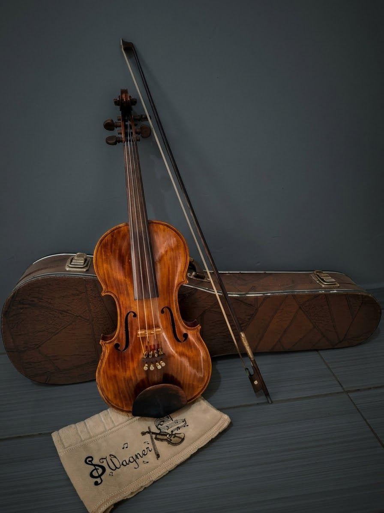
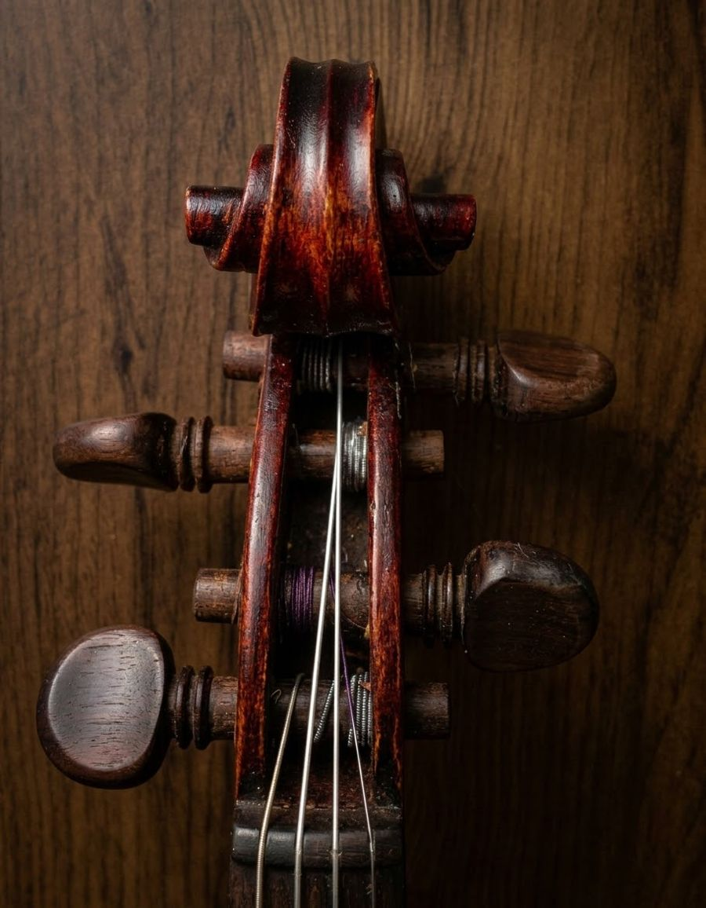
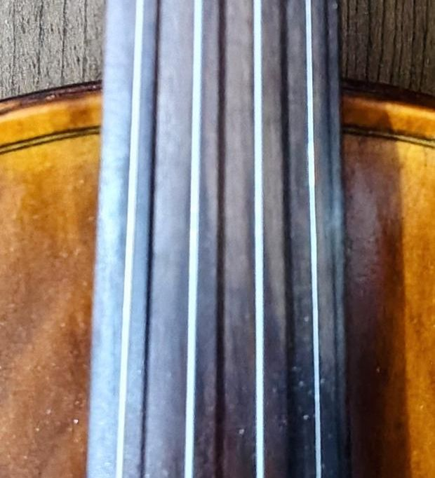
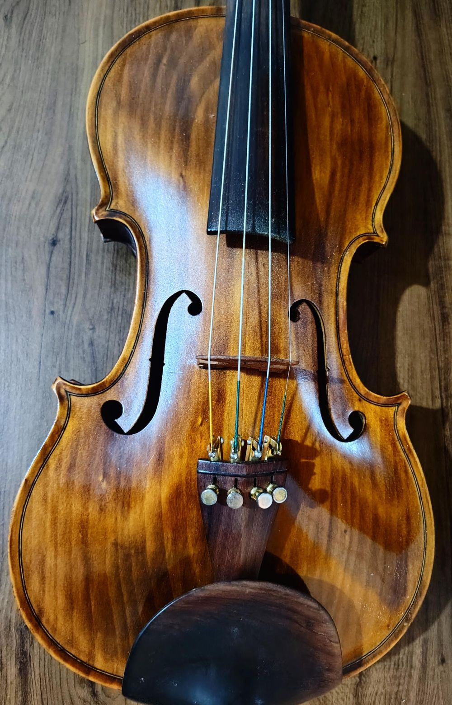
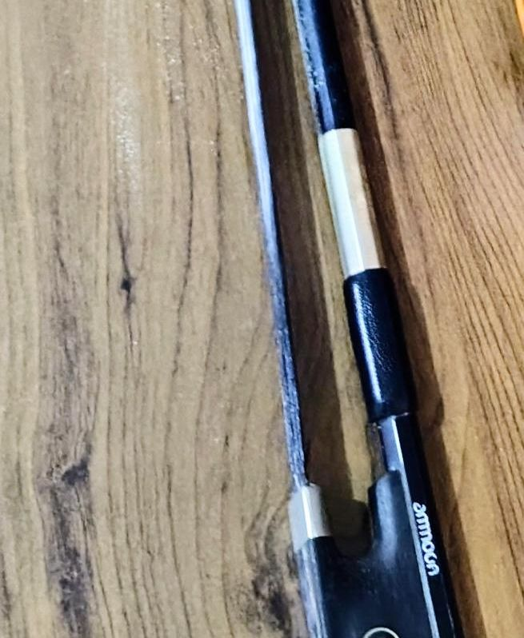

Passe o mouse ou clique nos cards abaixo para visualizar as fotos e entender a relação com a sustentabilidade (ODS 12 - Consumo e Produção Responsáveis).
Explore as imagens detalhadas do instrumento e descubra como a luthieria clássica dialoga com as metas do ODS 12 (Consumo e Produção Responsáveis) na preservação de recursos naturais e no design sustentável.




Como traduzimos a filosofia da luthieria e do ODS 12 (Consumo e Produção Responsáveis) em peças de vestuário e acessórios conscientes:
Tecido leve produzido com linho orgânico. O conceito Eco-friendly (Amigo da Natureza) garante que sua fabricação não agride o ecossistema e utiliza corantes limpos.
Inspirada nos tons quentes do verniz artesanal do violino. Desenvolvida com foco em Durabilidade Consciente (Feito para Durar Gerações), combatendo a cultura do descartável.
Bolsa reutilizável de lona crua. O conceito Zero Waste (Lixo Zero) significa que o corte do tecido foi rigorosamente planejado para não gerar nenhum desperdício de sobra no lixo.
Cadastre-se para receber novidades sobre a coleção conceitual e as diretrizes do ODS 12 (Consumo e Produção Responsáveis).